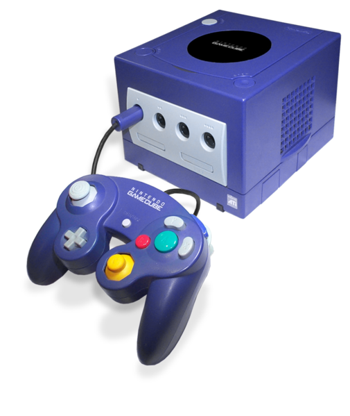

Nintendo GameCube, 2001
 CPU: IBM Power PC “Gekko”
FP 64 bits, Int 32 bits
Freq: 486 MHz
GPU: “Flipper”Freq:
162 MHz
RAM: 24 MB
VRAM: 3MB
Som e DVD: 16 MB
Jogos em miniDVD (Panasonic)
Unidades vendidas: 21,74 milhões
Jogo mais vendido: Super Smash Bros Melee